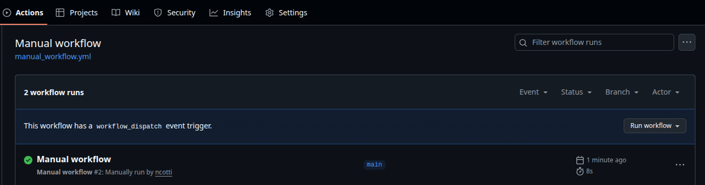

Events: When workflows run
Use the on key to specify what events trigger your workflow. Check the full list of events.
You can filter each event to be more specific, for example, to trigger the workflow only on push to a certain branch, or when certain files are modified:
# Event triggered when pushed code to branch "main",
# and a file inside the folder "sources" was modified
on:
push:
branches:
- main
paths:
- "sources/**"
Manually triggered workflows
The special event workflow_dispatch allows the workflow to be triggered manually. In the webpage of your GitHub repository go to the "Actions" tab. A message mentioning the "workflow_dispatch event trigger" should appear, together with a button to run the workflow, as shown in the picture below.

Conditionally triggered workflows
You can add and if conditional expression on a job, using the ${{}} operator: if the condition is true, the job will run; if it's false, then the job won't run and will be marked as skipped. The following example only runs the job if the string "FORCE_CI" is found in the commit message.